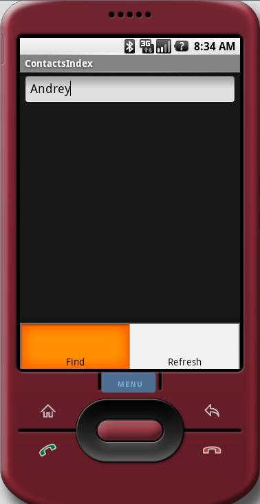

Android is neither Java ME (J2ME)- nor J2SE-compatible. It provides its own framework of classes, but most of the Java 1.6 SE classes are present here, so it is possible to use Perst version 1.5 under Android. Although Android includes a built-in database system, SQLite, Perst provides better performance (almost ten times better in our TestIndex benchmark test) and of course, Perst delivers the benefits of object orientation, including a seamless interface with application objects, and the ability to persist complex data structures.
Although the perst.jar library can be used under Android without any
changes, there is one aspect which should be noted. It is not possible to pass just name of the file
to Storage.open method - it will cause java.io.FileNotFound exeption.
You should exother explictely specify absolute path, either use
android.content.ContextWrapper.getFileStreamPath method to obtain absolute path to the file:
String databaseName = "testindex.dbs";
String databasePath = getFileStreamPath(databaseName).getAbsolutePath();
// Get instance of Perst storage
Storage db = StorageFactory.getInstance().createStorage();
// Open the database with given database name and specified page pool (database cache) size
db.open(databasePath, pagePoolSize);
|
ContactsIndex is a built-in search engine (similar to Google Desktop) for your
Android mobile phone. Right now it indexes only the contact list of your phone. But
in principle it could be extended to index all files in a phone's file
system, including word processing documents, stored HTML pages, PDFs,
song/picture metainformation, schedules and to-do lists, and more. Such
extension would require, at least, development of parsers for the various
file formats.
When it is launched the first time, ContactsIndex extracts the contents of all contact lists and stores them in the Perst Lite storage. In addition to fetching and storing all persons information from phone contacts list, the ContactsIndex appliccation also builds a full text search index for all text information extracted from the contact list. So issuing the query "doctor" returns information about any doctor's contact in the contact list. And the query "Anna Beverly Hills" will help you to remember contacts of Anna living in Beverly Hills. The primary goal of this example was to illustrate Perst full text search capabilities rather than create an appliction for everyday use on mobile phones. So this example mostly illustrates how to store data in Perst and how to build and use full text search index. To build and run this application you need to have the Eclipse IDE with an installed Android plugin. All necessary information about installing the Android plugin for Eclipse is available here. To get started with the ContactsIndex benchmark, follow these steps:
|
 |
For support please e-mail support@mcobject.com or visit our Perst support forum at http://forums.mcobject.com/.